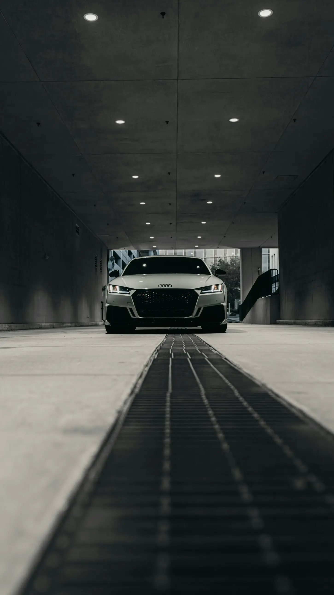
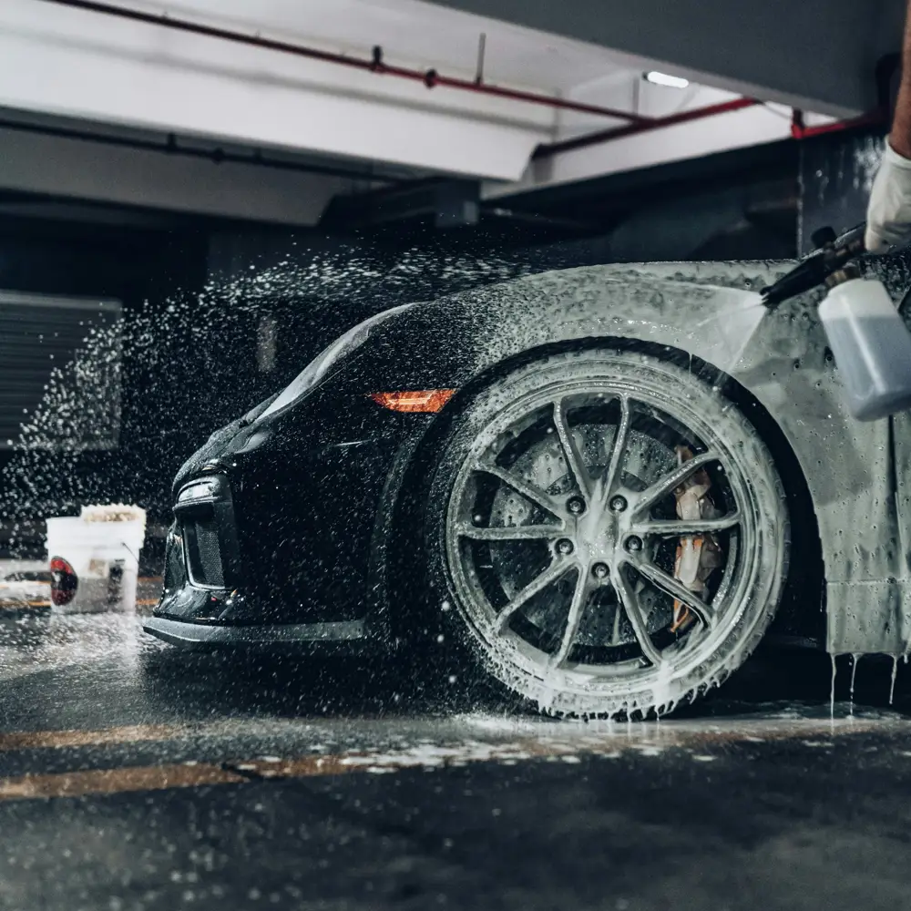
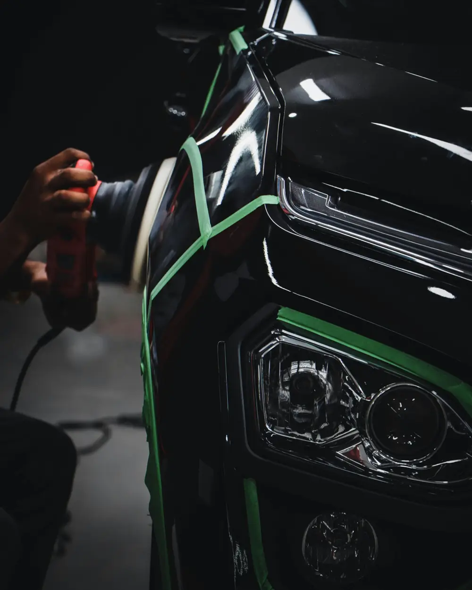
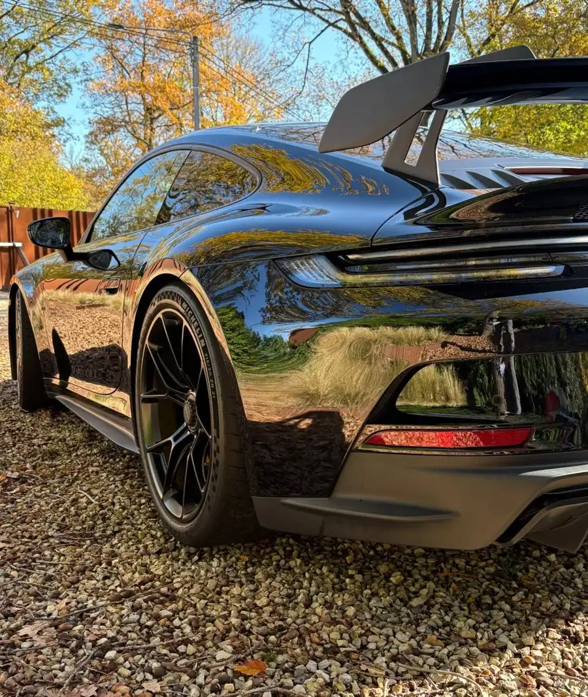
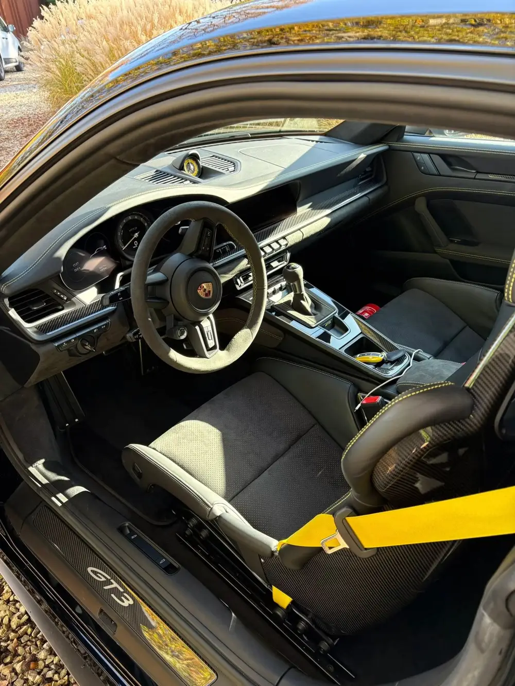

« Service ponctuel et impeccable. Le résultat est une voiture qui semble sortir de chez le concessionnaire. »
RenaudFin de leasing
Polissage, céramique et detailing automobile dans le Hainaut
Un résultat comme la première fois : nous redonnons à votre véhicule son état de sortie de concession, à domicile ou en entrepôt. Detailing intérieur et extérieur, polissage de la peinture et traitement céramique pour particuliers et professionnels.
+700voitures passées entre nos mains
Domicile ou entrepôtVous choisissez le lieu
Tout le HainautMons, Charleroi, Tournai…
Nos prestations de detailing automobile
Du simple entretien à la remise à neuf complète, HiClean prend soin de votre véhicule dans le Hainaut, à domicile ou en entrepôt.
Detailing intérieur
Sièges, plastiques, tapis et vitres sont nettoyés en détail pour retrouver un habitacle agréable. Idéal pour une remise à neuf, avant une revente ou pour un entretien régulier.
Detailing extérieur
Lavage soigné de la carrosserie, des jantes et des finitions, pour une voiture nette jusque dans les moindres détails.
Polissage de la peinture
Il atténue les micro-rayures, les marques de lavage et le ternissement pour redonner de la profondeur et une brillance uniforme.
Traitement céramique
Appliqué sur une peinture préparée, il protège la carrosserie, crée un effet hydrophobe et rend l’entretien plus simple.
Préparation de fin de leasing
Une remise en état complète, intérieur et extérieur, pour restituer votre véhicule dans le meilleur état possible.
Flottes et professionnels
Entretien régulier de flottes, de camionnettes et d’utilitaires, ainsi que nettoyage de fin de chantier.
Polissage et pose de céramique
Le polissage prépare la peinture. Le traitement céramique vient ensuite la protéger.
Avec le temps, les lavages et le soleil ternissent la peinture. Le polissage atténue les micro-rayures et les marques de lavage. Appliquée ensuite sur une peinture préparée, la céramique protège la carrosserie et facilite l’entretien.
Peinture corrigéeMicro-rayures et marques de lavage atténuées
Brillance uniformeProfondeur et éclat retrouvés
Effet hydrophobeL’eau perle et glisse
Entretien simplifiéUne carrosserie plus facile à nettoyer
Corriger la peinture, puis la protéger



Lavage soignéÉtape 1
Un lavage soigné
Carrosserie, jantes et finitions sont nettoyées en profondeur avant toute intervention sur la peinture.
Étape 2
Le polissage
Avec le temps, les lavages et le soleil ternissent la peinture. Le polissage atténue les micro-rayures pour une brillance uniforme.
Étape 3
La protection céramique
Appliquée sur une peinture préparée, elle protège la carrosserie, crée un effet hydrophobe et simplifie l’entretien.

Detailing intérieur et extérieur
Un véhicule se juge autant de l’extérieur que de l’intérieur. HiClean s’occupe des deux avec le même niveau d’exigence, pour redonner à votre voiture son état de sortie de concession.
Intérieur
- Sièges et sellerie
- Plastiques et tableau de bord
- Tapis et moquettes
- Vitres et surfaces vitrées
Extérieur
- Lavage soigné de la carrosserie
- Jantes, pneus et optiques
- Finitions et détails
- Polissage et protection céramique
Comment ça se passe ?
1
Vous nous écrivez
Par le formulaire ou par téléphone, vous décrivez votre véhicule et votre besoin : detailing, polissage, céramique ou remise en état. Nous revenons vers vous avec un devis.
2
Chez vous ou en entrepôt
Nous nous déplaçons partout dans le Hainaut, ou vous nous confiez votre véhicule dans notre entrepôt. Le travail est réalisé avec soin, pièce par pièce.
3
Vous reprenez le volant
Votre véhicule ressort comme au premier jour : propre, brillant et protégé.
Des chiffres, surtout des voitures
Depuis octobre 2023, HiClean redonne aux véhicules du Hainaut leur état de sortie de concession. Plus de 700 voitures nous ont déjà été confiées : particuliers, professionnels et flottes, à domicile comme en entrepôt.
+700voitures passées entre nos mains
9villes du Hainaut desservies
3expertises : detailing, polissage, céramique
2023l’année de naissance de HiClean
Pour les particuliers et les professionnels
Particuliers
Redonner de l’éclat à votre voiture, préparer une revente, rendre un véhicule de leasing ou protéger une peinture neuve : nous adaptons la prestation à votre véhicule, de la citadine à la sportive premium.
Demander un devisProfessionnels
Flottes, camionnettes et utilitaires entretenus régulièrement, nettoyage de fin de chantier : un entretien suivi pour garder vos véhicules propres et présentables.
Parler de votre flotteIls nous ont fait confiance
« Excellent service et très aimable. Mon Yeti de dix ans est ressorti comme neuf, intérieur comme extérieur. »
AndréRemise à neuf« Nos camionnettes sont entretenues chaque mois : un vrai plaisir de rouler dans un habitacle propre. »
T.O.A ToituresGestion de flottePartout dans le Hainaut
- Mons
- Charleroi
- La Louvière
- Tournai
- Binche
- Soignies
- Ath
- Mouscron
- Dour
HiClean réalise detailing, polissage et traitement céramique à Mons, Charleroi, La Louvière, Tournai, Binche, Soignies, Ath, Mouscron, Dour et partout dans le Hainaut. Nous nous déplaçons chez vous ou vous accueillons en entrepôt. Gestion de flotte, nettoyage de fin de chantier et de canapé également disponibles.
Questions fréquentes sur le detailing, le polissage et la céramique
Qu’est-ce que le detailing automobile ?
Le detailing consiste à nettoyer, remettre en état et protéger un véhicule dans les moindres détails, à l’intérieur comme à l’extérieur. Il va bien plus loin qu’un lavage classique : sièges, plastiques, jantes, finitions et peinture sont traités un par un.
Intervenez-vous à domicile ou en entrepôt ?
Les deux : nous nous déplaçons partout dans le Hainaut, ou nous vous accueillons en entrepôt.
Dans quelles villes du Hainaut intervenez-vous ?
Nous nous déplaçons partout dans le Hainaut, notamment à Mons, Charleroi, La Louvière, Tournai, Binche, Soignies, Ath, Mouscron et Dour.
Quelle différence entre polissage et céramique ?
Le polissage corrige les micro-rayures et ravive la brillance. Le traitement céramique protège ensuite la peinture et facilite l’entretien.
À quelle fréquence faut-il polir sa voiture ?
Il n’y a pas de fréquence fixe : on polit lorsque la peinture présente des micro-rayures, des marques de lavage ou un aspect terne. Un entretien régulier et une protection céramique limitent ensuite le besoin d’y revenir.
Le traitement céramique dispense-t-il de laver sa voiture ?
Non. Il protège la peinture, crée un effet hydrophobe et rend l’entretien plus simple, mais le véhicule doit continuer à être lavé régulièrement.
Préparez-vous les véhicules de fin de leasing ?
Oui. Nous proposons une préparation de fin de leasing : remise en état de l’intérieur et de l’extérieur pour restituer le véhicule dans le meilleur état possible.
Proposez-vous des services pour les entreprises ?
Oui : entretien régulier de flottes, de camionnettes et d’utilitaires, ainsi que nettoyage de fin de chantier.
Comment obtenir un devis ?
Remplissez le formulaire de réservation en choisissant votre prestation et votre type de véhicule, ou appelez le 0474 87 65 21. Le tarif est confirmé par devis, selon l’état du véhicule.